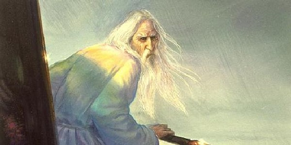
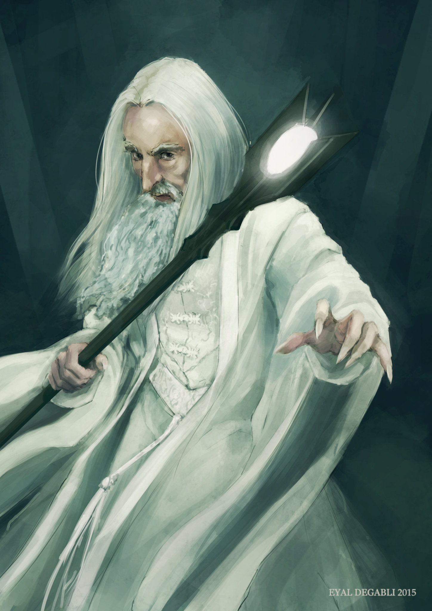

forrás: Andrea Piparo
forrás: Andrea Piparo  forrás: John Howe
 forrás: Eyal Degabli
 forrás: Wesnoth wiki
forrás: Wesnoth wiki Göncöl táltos
Göncöl személye a forrásom szerint csak Csallóközben jelenik meg,
ugyanakkor én elképzelhetőnek tartom, hogy akár az egész országban
is ismerhették, ahogy a róla elnevezett csillagképet is ismerik.
Kevés töredék maradt fenn róla sajnos, igyekszem mindent ide összegyüjteni, amit találok róla.
Göncöl egy táltos volt, akinek csodálatos képességei voltak, többet között:
- Jövőbelátás
- Beszélgetés madarakkal, állatokkal
- A fák és az erdő suttogásának megértése
- Szekerével a levegőben közlekedés
- Természeti erők irányítása
- Gyógyítás
- Holtak feltámasztása
- Elmetrükk (?)
A csallóközi öregek elmondása szerint, Göncöl táltosnak hosszú fehér haja és nagyon
hosszú, dús ezüst szakálla volt. Szemében a nap és a hold ragyog, benne tündökölnek a csillagok.
Öreg kora ellenére is sudár, egyenes mint a szálfa, igen gyorsjárású ember volt.
Mindig földig érő fehér köpenyt hordott, bár egyesek szerint olykor pásztornak vagy koldusnak álcázta magát,
de máskor viszont álcázatlanul járt az emberek között, mikor őket gyógyította ,vagy épp büntette.
Otthona magas hegyen volt, hogy közel tartózkodjon az éghez.

Egyesek szerint Göncöl táltos volt az, aki magát a szekeret/kocsit is feltalálta,
lévén, hogy milyen "tudákos" ember volt, mennyi-féle rejtett tudományhoz is értett.
Ezt bizonyítandó, azóta kiderült, valóban a Komárom megyei ,,Kocs" községről származik
a ,,kocsi", amely ugyanezzel a névvel átterjedt más nyelvekben is (coach, kocz...),
de erről majd máskor.
,,Mielőtt még az idegenlelkü Tamások képére kiülne a gúnyos mosoly, nyomban elmon
dom, hogy itt nem általában a szekér, hanem egy sajátosan magyar
szekér feltalálásáról van
szó csupán!"
Szekeréről három fontos dolgot kell tudni:
- Nagyon nehéz volt
- Ökrök nem hajtották, mégis ment.
- Képes volt repülni
A néphiedelemben a szekér ezen tulajdonságairól való tudomás őrződött meg.
,,Olyan nehéz, mint a Göncöl szekere.''
,,Csak a Göncöl szekeréhez nem kell ökör...''
A szekér kerékágya eltörött, Göncöl bajba jutott, de az emberek valamiért nem segítettek neki.
Göncölt senki sem látta meghalni. Az égbe ment a szekerével együtt, s ez a szekér, amit mi
manapság csak úgy ismerünk ,,Göncöl szekere", avagy ,,Göncölszekér" csillagkép.
Sok Göncöl családnevű ember van a mai napig, de fontos leszögezni, hogy Göncöl táltosnak
utódai nem voltak. - Mondta egy elbeszélő a gyüjtőnek, minden bizonnyal azért, hogy
kihangsúlyozza, Göncöl nem egy egyszerű földi halandó volt, és nem akarta nevét az
átlag halandó emberekkel összemosni, azonosítani.
Úgy tartják, ahogyan Göncöl a Földön szállt a levegőben a szekerével, ugyanígy szálldogál
odafenn is, és kíséri a mennybe az elhunytakat.
(Ezen a ponton már majdhogynem olyan,
mintha egy félisten lenne, ezért egyesek megpróbálták/megpróbálják a magyarok istenével is
azonosítani)
Göncöl Táltos a mondákban
Sajnos egyáltalán nem találtam meg a mondákat, melyek Göncölt említik,
ugyanakkor a forrásaim egy rakat ilyet említenek, az egyik névvel is említi őket,
idézetekkel is.
Jobb híján leírom, hogy ezek miről szólnak a források szerint, beillesztem ide az
idézeteket és töredékeket,
de csodás lenne,
ha itt elhelyezhetném magukat a mondákat. Kérem, ha bárki talál ilyet, feltétlen
keressen fel ez ügyben.
,,Másik rege"
Göncöl már iíjú dalia, aki déd- vagy ükapja utasítására összerakja az égi
legelő magas füvébe rejtett darabjaiból a szekeret és
befogja elé a hófehér táltosparipákat.
Göncöl táltos csillagjárása
[...] Göncöl még pendelyes gyermek. Göncöl ükapja, egy sámánfejedelem, épp
maszlagolt borral van elkábítva. Ebben a bódult állapotban a szekeret
véletlen nekihajtja egy tölgyfának, ez óta ferde/törött a göncölszekér rúdja. [...]
[...] A csillagszekeret húzó lovak nagyon fáradtak, elgyengültek, kín számukra
húzni a szekeret. Göncöl kilyukasztja az arany- és ezüstlisztes-zsákokat, így
könnyítve meg a lovak sorsát, és így juttatva aranyhoz a csallóközi aranyászokat.
Göncöl táltos és a nyúl
[...] Göncöl miközben révületében az alvilági hatalmakkal viaskodik a Földért
és lakóiért, előtte minden elsötétül, és a hazafelé vezető utat nem találja meg.
[...] De egy üregi nyúl hazavezeti őt. Ezért hálából a táltos felhelyezi a nyulat
A Holdra, így többé nem kell rettegni neki a ragadozóktól.
források:
Jankó Zoltán (szerk.): Csallóközi Muzeum (Bratislava. s.n., 1928) 45. oldaltól az 50. oldalig
N. László Endre - Göncöl Táltos csak a Csallóközé!
Ipolyi Arnold - Magyar Mythologia, 1854
(268. oldal a könyvben / 474. oldal a dokumentumban)